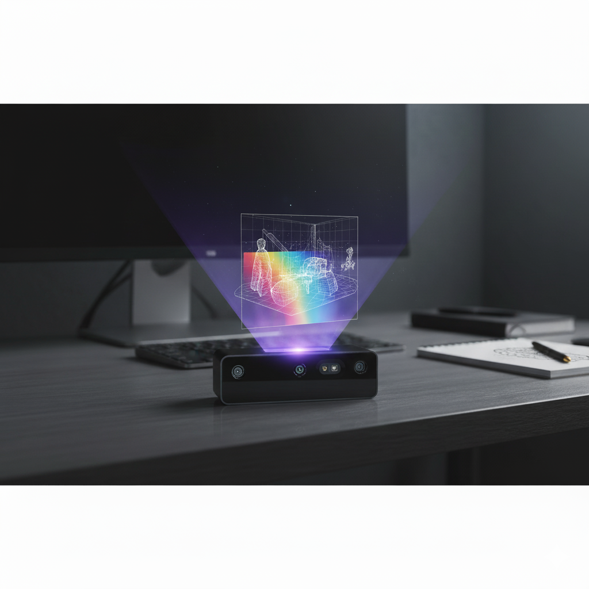

Additional Projects
Exploring diverse areas of robotics, AI, and computer vision

|
Pixel Art with Stamps using a Franka Robot
report / code A robotic system that transforms any input image into pixel art through sequential stamping! Images are decomposed into grids, stamping paths are optimized for minimal travel, and force control enables reliable execution.
• Motion planning with Christofides’ algorithm for travel-minimizing stamping order
• Force-controlled manipulation for consistent stamping under variable surface conditions • ArUco-based perception and calibration to localize and switch between ink pads dynamically |
|  |
Neural-Assisted Depth Disparity Estimation
Developed a coarse-to-fine stereo matching network for the OAK-D Pro that enhanced real-world disparity estimation quality while sustaining real-time inference on embedded hardware. Ranked among the Top 25 teams internationally.
• Coarse-to-Fine Architecture: Designed a multi-scale refinement pipeline for disparity maps, achieving ~1.7 px EPE and 8% D1-all error on real-world scenes
• Real-time Optimization: Integrated ONNX Runtime with quantization and operator fusion to fit the OAK-D Pro’s compute budget, sustaining 25–30 FPS onboard |
|
cloned from here! |